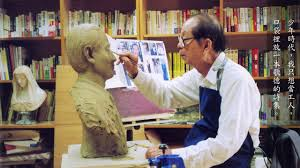
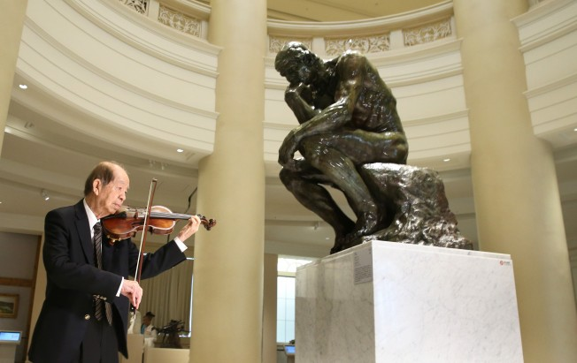

<html>
<head>
<title>我的第2頁 創辦人</title>
</head>
<body bgcolor="#99ccAA" text="000000">
<center>
<div>

<audio src="hank.mp3" controls autoplay />

</div>  


</body>

</html>

<html>
<head> 
<body>   
<a href="index.html">連到首頁 奇美博物館</a>

<a href="3rd.html">連到第3頁 館藏</a>

<a href="4page.html">連到第4頁 網際網路心得</a>

<br>


<br>


<br>
<font face ="標楷體">
創辦人<br><i>許文龍小時候常造訪臺南州立教育博物館，立志長大後也要開一間博物館。而後來創辦奇美實業後，成為大企業家之餘，對藝術、音樂（收藏超過一千把小提琴）也很有興趣。從收藏名琴開始，奇美逐步擴展收藏藝術品的領域，終於有計畫有規模的成立博物館。</i>
   
</font>
</center>

</body>
</html>
